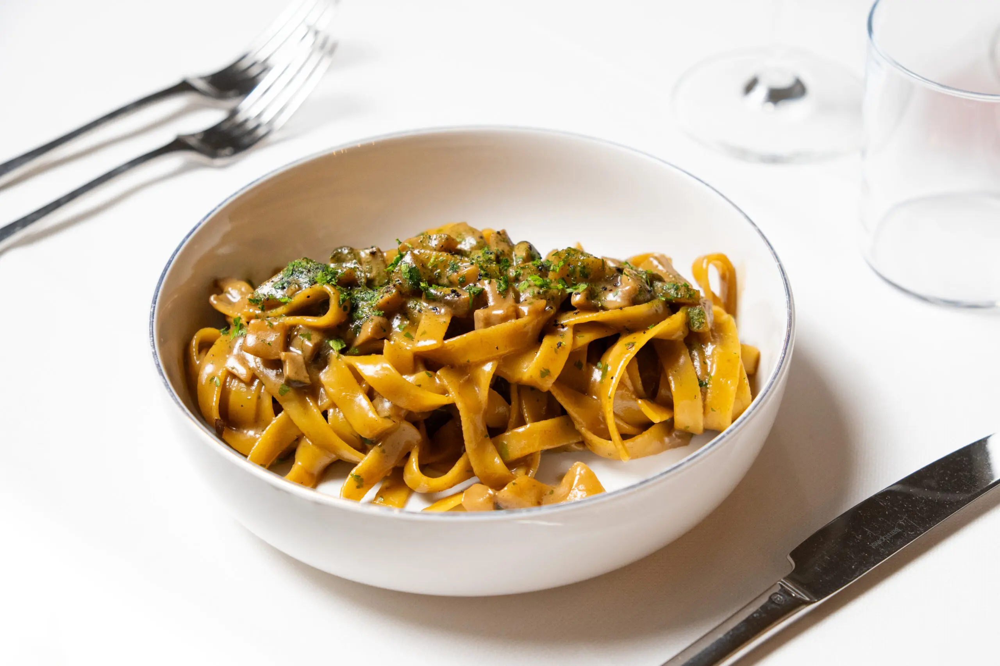
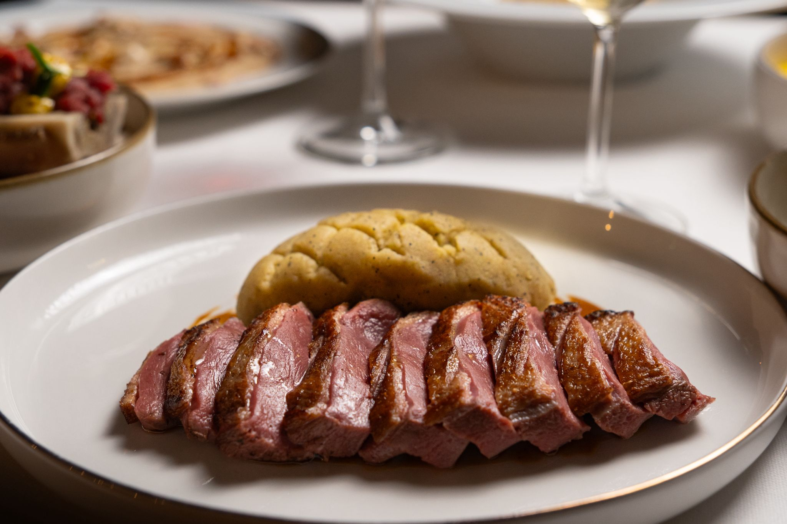
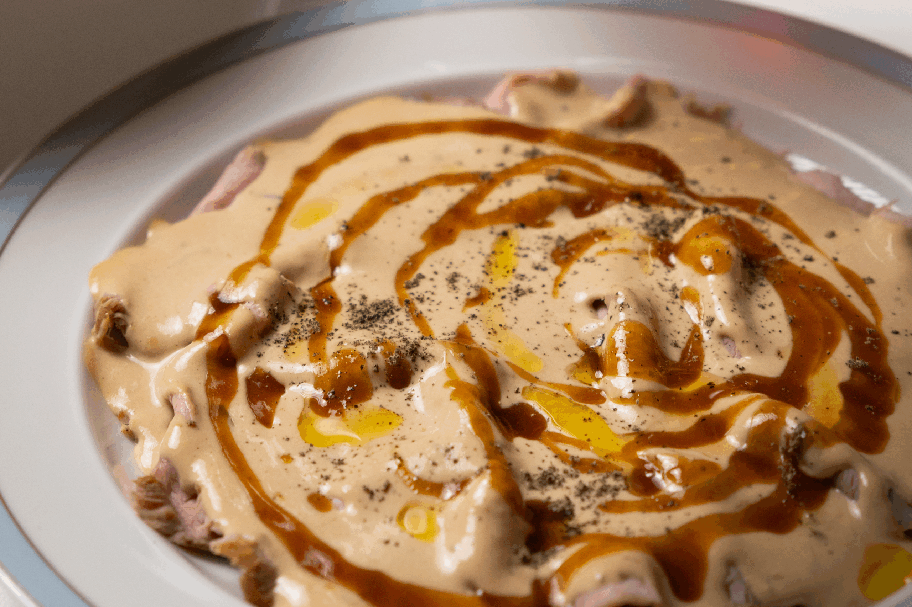
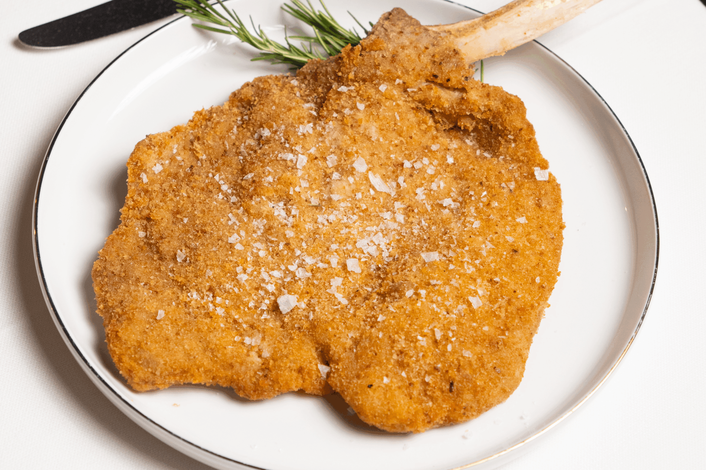
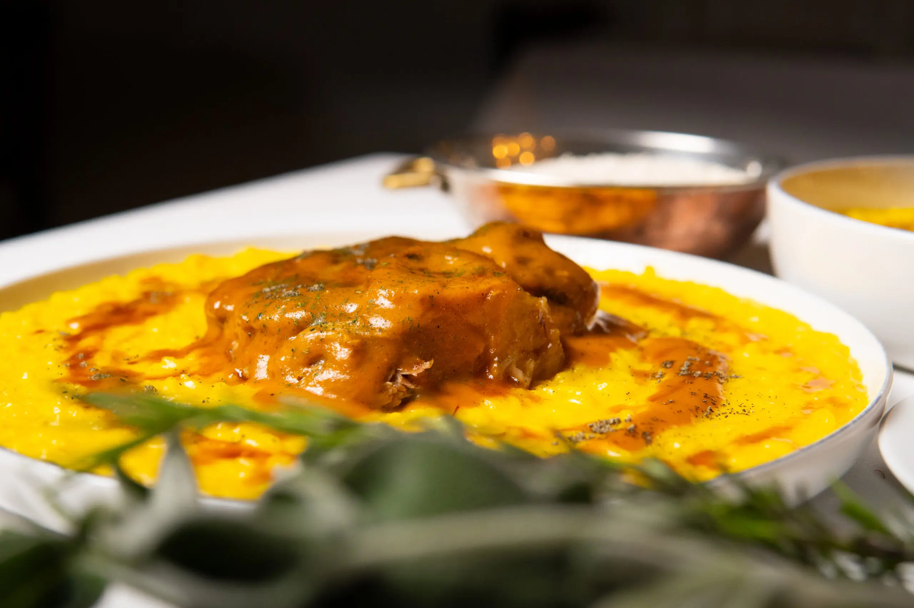
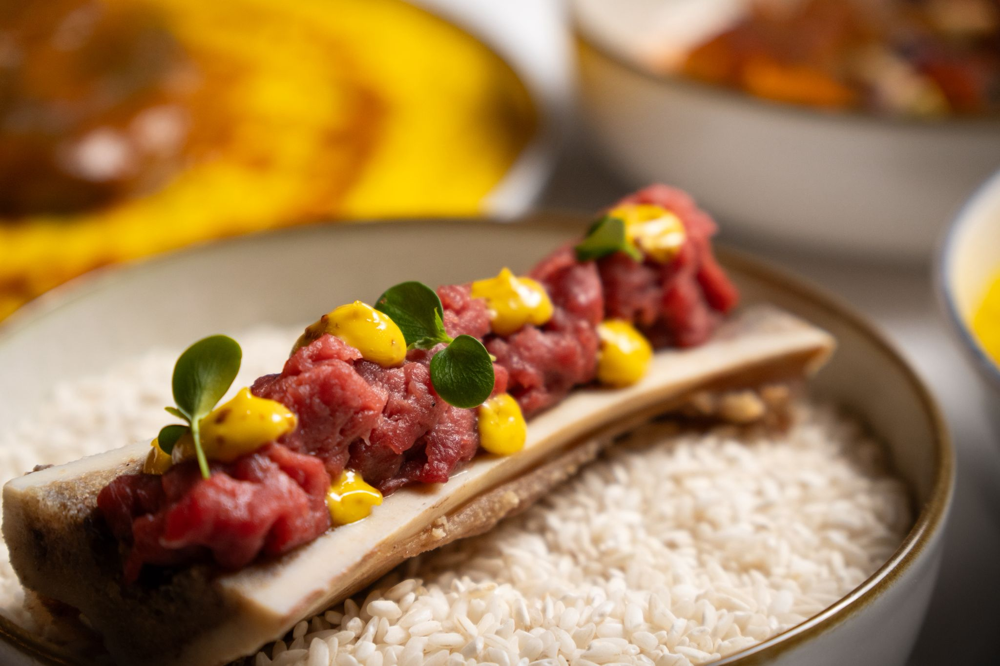

Sapori autentici, ingredienti locali e rispetto per la tradizione.
Da Sant'Eustorgio Milano la cucina è una dichiarazione d'amore per Milano e il Piemonte. I piatti nascono da ricette tramandate, reinterpretate con delicatezza e rigore. Ogni portata è preparata al momento, con ingredienti selezionati e accostamenti che esaltano la memoria del gusto.
Menù

Cucina sincera, radici solide e un tocco contemporaneo.
Il menu segue la stagionalità e racconta il territorio attraverso profumi e consistenze autentiche. Dal risotto saltato della tradizione ai fusilloni alla Norma con pesce spada, ogni piatto unisce storia e creatività. La materia prima è protagonista: carni piemontesi selezionate, formaggi d'alpeggio, verdure di stagione e prodotti locali scelti con cura. Nulla è lasciato al caso, perché ogni dettaglio contribuisce a creare un'esperienza completa.


Una selezione che parla di identità.
Il risotto alla milanese, preparato con burro acido e jus di vitello, è un omaggio alla città; la tartare di Fassona racconta l'eleganza della carne piemontese; l'ossobuco con risotto allo zafferano porta in tavola il profumo delle domeniche di un tempo. Poi ci sono le lingue salmistrate con bagnetto rosso, i ravioli di grano saraceno al Bitto e funghi porcini, e il petto d'anatra al Nebbiolo: piatti che restano nel cuore.